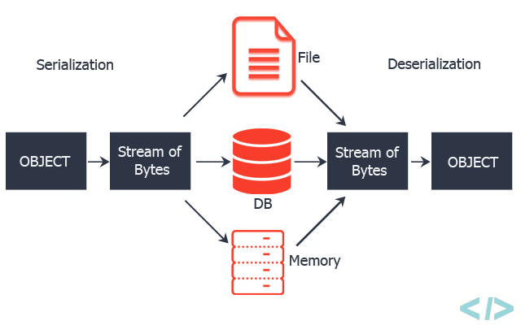

From Java IO to Java NIO

December 28, 2018
Serialization is a mechanism of converting the state of an object into a byte stream. Deserialization is the reverse process where the byte stream is used to recreate the actual Java object in memory. This mechanism is used to persist the object.
The byte stream created is platform independent. So, the object serialized on one platform can be deserialized on a different platform.
To make a Java object serializable we implement the java.io.Serializable interface.
The ObjectOutputStream class contains writeObject() method for serializing an Object.
public final void writeObject(Object obj) throws IOException
The ObjectInputStream class contains readObject() method for deserializing an object.
public final Object readObject() throws IOException, ClassNotFoundException
Benefits of Serialization:
1. To save/persist state of an object.
2. To travel an object across a network.
Only the objects of those classes can be serialized which are implementing java.io.Serializable interface. Static data members are not part of serialization.
Serializable is a marker interface (has no data member and method). It is used to “mark” java classes so that objects of these classes may get certain capability.
SerialVersionUID
The Serialization runtime associates a version number with each Serializable class called a SerialVersionUID, which is used during Deserialization to verify that sender and reciever of a serialized object have loaded classes for that object which are compatible with respect to serialization.
How deserialization works?
Deserialization is the process by which the object previously serialized is reconstructed back into it’s original form i.e. object instance. The input to the deserialization process is the stream of bytes which we get over the other end of network OR we simply read it from file system/database.